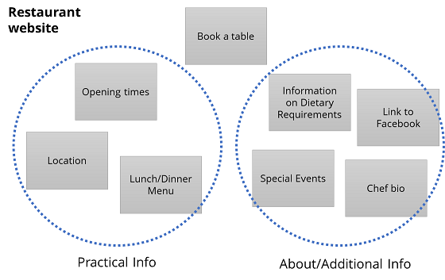
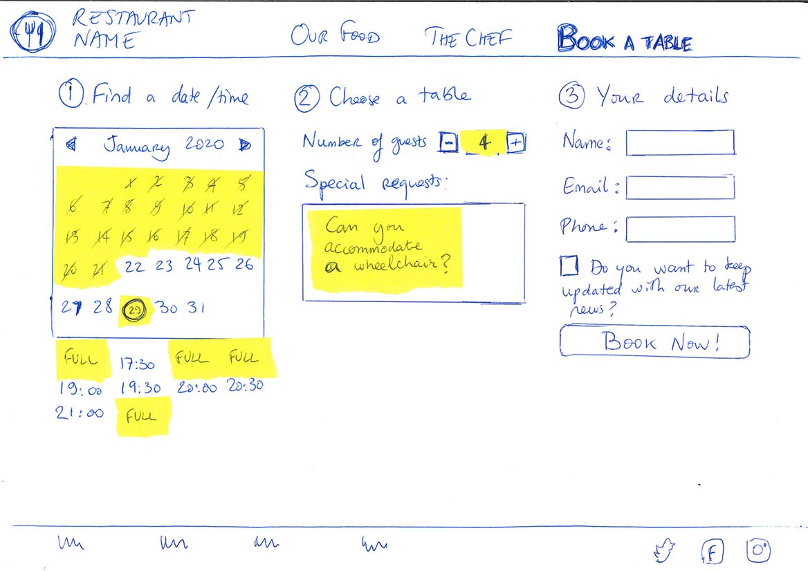
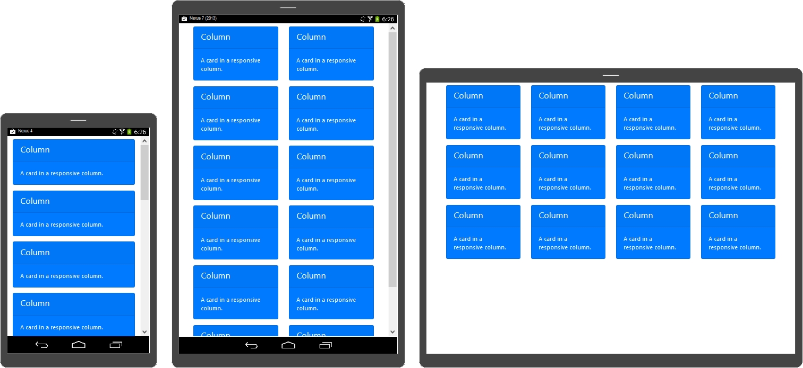

Use the provided templates to achieve the group assignment.
Modify more complex elements such as carousels and grids.
Collaborate efficiently to deliver the assignment.
Contents of this part
This final chapter helps you apply the knowledge you gained in the individual assignment to start working on the group assignment.
First, we provide a brief reminder of the design process, and the deliverables you will have to provide for the justification document.
In the next section, we guide you’ through the templates that we’ve developed for the course.
Then you learn how to implement common UX patterns using Bootstrap.
One of these patterns is the grid, which is so important we gave it its own section.
Finally, you get some tips on how to collaborate efficiently and avoid errors.
What you need to do
This part of the guide will support you in completing the group assignment:
You start by making design decisions and thinking about what your website will contain and what
The justification document will contain information about your design decisions and. Build upon the content from PRO1 and PRJ1 to write this document.
To start the actual development work, copy the template and create your own group repository – choose the name carefully so your website’s URL reflects the name of your brand. This is explained in Chapter 1.
4.3
Your design process
Summary:
The process is similar to the app design process you went through in PRJ1.
This section summarizes the process and clarifies the deliverables.
You will have to deliver prototypes and test them.
Deliverables
As part of the main PRJ4 justification document, you will deliver justifications for your web design choices.
The “website justifications” chapter will contain 2 parts:
A list of design elements alongside their justifications:
A colour scheme (with colour codes)
Font choices
User interface patterns (e.g. grids, carousels, menu organizations etc.)
The structure of the navigation and content (e.g. how content units are distributed across pages)
A scanned paper prototype
A testing report, including:
Testing goals
The testing methods, i.e.
Information about test participants (number, match with target audience, etc.)
Information about the setting (which material is used, is it done remotely, on campus, at home, etc.)
Information about how the test is conducted (what instructions are given, how it is recorded, etc.)
Testing results
Issues and positive points that have been identified, ranked by importance.
Improvements that have been conducted on the final website.
When writing design justifications, students must clearly relate them to:
The theory and vocabulary of design
Insight about the audience developed in the other units
The marketing, communication and product development strategies developed in other students
The appendix to the justification document must contain evidence of testing, such as blank consent forms, photos and/or transcripts.
Deadlines
The full website and justification document will be due on the final deadline of Thursday 14 April 2022. There are some intermediary deadlines for your progress on the website:
At the end of Project Week 5(Calendar Week 11, 14 – 18 March 2022), you must have a landing page ready and published online, which only needs to include the name, logo and colours of your brand. One of the goals of this deliverable is that you already have an address for the website that you can use in your communication.
At the end of Project Week 6(Calendar Week 12, 21 – 25 March 2022), you must have completed the paper prototype for your website.
During Project Week 7(Calendar Week 13, 28 March – 1 April 2022), you should work on user testing on the basis of your paper prototype. This is self-directed work that you must plan yourselves.
During Project Week 8(Calendar Week 14, 4 – 8 April 2022), you will receive final feedback on your design and your justification document.
The retake deadline is at the end of the semester, on Friday 10 June 2022.
Prototyping
You will create the prototype in 3 steps, starting by defining your content, then creating a task flow and then designing the individual screens.
Define and organise content and features
Start by defining the content you want to put on your website, based on the audience you’re targeting and the needs of your audience.
If you are designing a content-heavy website, like a blog or a portfolio, think of what categories your content will fit into. As with project 1, try to think about whether your content is linked to a specific time.
If you are designing an app, try to think in terms of actions and activities that users can do. For example, this could be “finding when the next bus comes” and “buying a ticket”.
At the moment, think in broad categories, rather than in terms of specific pages or screens you want to include.
Write down your units of content on cards. Once you’ve done that, try to rearrange the cards to see if they are some natural groupings of units of content that seem to fit together.

Divide your content into pages and design a task flow
Once you have some high-level categories of content, start thinking about how this would translate into pages (for a website) or screens (for a mobile app).
These pages or screens are generally more detailed than the units of contents or actions that you’ve developed in the first step. For example, a page in a portfolio can be “list of all photos”, “list of architecture photos” and “an individual photo”. For an app, maybe the payment part of your app would contain screens for “enter card details”, “review payment” and “receive purchase confirmation”.
In some cases, you will choose whether you group pieces of content in a single page or split them across pages. Scrolling to access more content is now a popular navigation pattern, and Bootstrap’s documentation uses scroll-based navigation extensively.
Once you’ve defined the pages or screen, start designing a task flow. This includes identifying:
Which is the landing page or home screen?
Which pages are directly reachable from the home?
Which pages act as hubs to go to other pages?
Are there pages or screens that must be visited in a single sequence?
Write down all pages as small box and draw arrows to show how they are connected through links and what sequence users should follow. If you have a “main menu” that is on all pages and links to many other, create a box for it to avoid having arrows everywhere.
In the next step, you will have to test the prototype and look at how usable it is.
Preparing for a usability test
During the usability test, you will ask potential users or customer to try out the feature of your website or app.
You should prepare “scenarios” which describe tasks that users have to perform.
Here are a few tips for preparing a good test:
When you create scenarios, be generic and focus on high-level activities. For example, for our restaurant website, “book a table for 4 people tomorrow” is a good generic scenario, while “find out which page has the menu” is too specific and will not let users explore your interface.
Make sure you do not provide too much guidance to your users, because otherwise your usability test will end up being a guided tour rather than an actual test of how people understand your design. Avoid instructions like “click here” in your scenarios.
Make sure your prototype can “react” to the users. Prepare post-its that show different states of the same page, so for example you can change the date or time of the reservation just by substituting post-its.
Do a quick run of the testing session for yourself to make sure that you have prepared all the screens or pages that are necessary to run the scenario.
Write down how you would perform the scenarios, so you can prepare the pages in the right order during the test.
What to look for during a usability test
When testing the usability of a product, we want to check the “5 Es of usability”:
Is the product Effective: Is the user able to do what they want to do or not?
Is it Efficient: Can the user achieve their goals quickly, or is it slow and complicated?
Is it Engaging: Does the user find it pleasant and satisfying, or is it dull and frustrating?
Is it Error tolerant: Can the user see if they’ve made mistakes and correct them?
Is it Easy to learn? Can new users quickly understand how to operate the product?
Ask your test users to perform your scenarios, and take note: Where are they hesitant? Where do they make mistakes. Listen to their feedback too.
Most importantly: try not to give them too many clues. If they can’t find a page or do something, then blame the design not the user.
In paper prototyping, you can use post-its creatively to simulate how a page works. Check below for an example.

This is the same paper prototype as above, but with information added via post-its
During the usability test, take notes and/or record the session. If you record audio or video for participants, you normally need to make them sign a consent form that clearly states the purpose of data collection.
Finish the sessions with “debrief” questions, where you ask your participants what they thought of your product and of the testing session. They may provide you with additional feedback that simply observing their behaviour couldn’t elicit. For example, even if they found the experience easy and straightforward, they might not think they would use your product in real life. Try to find out the reasons.
Reflecting on a usability test
Based on your notes and recordings, start by summarizing the issues you’ve found.
Group the issues based on:
What parts of the website or app they affect
How serious they are – do they make the product unusable or are they small distractions?
Whether they involve changing superficial aspects (e.g. button size) or if they would require changing the whole concept of the product.
Now you’ve written your findings, start writing recommendations and for each of the issues, write down suggestions for fixing it.
Don’t hesitate to create a new paper prototype that implements your recommendations before starting to build your website. You can go through the whole cycle of prototyping and testing multiple times, it will always be quicker than coding the wrong product. In industry, because you would have to pay a professional software developer, this also means that prototyping and testing can save you a lot of money!
4.3
A tour of our templates
Summary:
You can use the prj4-group-template repository to get started.
It includes the UX patterns described in the next section.
The buas-media-interactive profile contains more examples.
The group template
The easiest way to get started with group work is to use the prj4-group-template repository. This is not mandatory (see below for alternatives).
The files in the group template follow the conventions introduced in part 2
In the root folder:
The index.html page, which is the landing page that you get if you do not type any HTML file name.
All other HTML files. So far, this is only the corporate.html file that you can edit to create a “corporate” section which will be used to grade some elements of the Content, Marketing and Management units.
If you decide to divide your content in multiple pages, you will create additional HTML files here. You can duplicate the index.html file to do so (this is how the corporate page was create).
You will notice a file named README.md. It is not part of the website itself but it provides useful information that is displayed on the GitHub repository
In the images folder:
This contains all images used in the template. Please remove the ones you aren’t using.
Please notice that all files are smaller than a megabyte and only one is bigger than half a megabyte.
File formats were chosen based on the content: SVGs for logos, JPEGs for photos, PNGs for content that includes gradients and text.
You can also draw inspiration from any website you like!
4.4
UX Patterns for the web
Summary
Menus, navigation bars, hero sections, carousels, scrollable pages etc. are common UX patterns.
They form a vocabulary that your website visitors will recognize and this will make interaction more intuitive.
Many such patterns are available “out of the box” in Bootstrap and can be customized.
Why use UX patterns?
Think of the web pages you visit and apps you use every day, for example:
Checking your email,
looking for train tickets,
buying clothes,
reading news,
sharing content on social media.
Now think of how all these sites and pages tell you how to use them and what things are…
How do you know if there is an element you can press or click?
How do you know if an item (e.g. a news story, a piece of clothing) is part of a list of similar items, and/or whether it is part of specific categories?
How do you know where to find informations relating to your personal profile?
How do you know where you are within the process of purchasing a product?
How do you know what to do if you want to restart the navigation or shopping process from scratch?
All this is done by applying UX design patterns. Just like the cinematographic language (or film grammar), UX elements can combine to help website visitors make sense of their experience.
What makes UX patterns especially powerful is that:
They are based on psychological principles (e.g. affordances and gestalt-theorie).
They have become so ubiquituous that visitors can apply their knowledge of using other apps and websites to visiting yours.
UX Patterns in Bootstrap
Bootstrap, which you’ learned about in Part 3, and that is used in all the PRJ4 templates, gives you access to many UX patterns.
You can find a list of these patterns in the Bootstrap documentation at getbootstrap.com/docs or just below
For each of these UX elements, the Bootstrap documentation gives you an example of code you can copy, tweak and reuse to achieve the same result.
<div class="spinner-border text-primary"></div>
An example of what you find in the Bootstrap documentation
Some of these patterns are already included in the PRJ4 repositories: this includes the navigation menu at the top of this page.
All these elements can be personalized, either by adding extra Bootstrap classes, or by creating your own styles in CSS.
Buttons
Buttons indicate places where you can click. Combined with text that uses action verbs, they are great to offer Calls-To-Action (CTAs) for your visitors.
Carousels (whose name comes from the fun fair attraction also known as “merry-go-round”) are a great way of showcasing visual content in a dynamic way.
Be careful with carousels:
Do not put too much text, since your visitors won’t have time to read it.
Too many moving images can cause overstimulation and can be unpleasant for some of your visitors.
Bootstrap's implementation of Flex layouts to move the bar from vertical to horizontal
Example of a side navigation
Click on the BUas logo or on the “hamburger menu” to expand the menu.
Click on the cross or on the logo to collapse again
4.5
The Bootstrap Grid
Summary
Almost all websites use grids to align and organize content
Bootstrap offers grid classes to divide your content in 2, 3, 4, 6 or 12 equal-sized columns
Grids can be made responsive: use different column sizes for the mobile and the desktop version of your site.
Why use grids?
Grids are a powerful way of implementing design principles such as balance, hierarchy and grouping, as well as guiding the eye of the reader.
Grids give a sense of order to complex web pages and help understand the logic between units of content.
As a result, every website that has to display a significant amount of content uses grids, from news websites to web shops and social media (Think of the Instagram grid!)
To create a grid, you need to start with a “container” block, then put a “row” block inside, and then fill it with as many columns as you want, using the col class inside. By default, all columns will have equal size. In the example below, you have three columns in the first row, and four in the last row.
See the example below for how to create containers, columns and rows that follow the default behaviour of being equally sized and filling the whole width.
<div class="container">
<div class="row">
<div class="col"> … </div>
<div class="col"> … </div>
<div class="col"> … </div>
</div>
<div class="row">
<div class="col"> … </div>
<div class="col"> … </div>
</div>
</div>
Column sizing
You can specify the width of a column. Like the BBC website, Bootstrap bases its grid on 12 vertical stripes. Column sizes are defined based on the number of grid units, or vertical stripes they occupy. To specify the size of a column, just change its class name to “col-n”, n being the number of grid units.
1
2
3
4
5
6
7
8
9
10
11
12
col-1
col-11
col-2
col-10
col-3 (¼ of container)
col-9 (¾ of container)
col-4 (⅓ of container)
col-8 (⅔ of container)
col-5
col-7
col-6 (half of the container)
col-2
col-1
col-3
1
2
3
4
5
6
7
8
9
10
11
12
If the total value is bigger than 12, then the Bootstrap grid will use as many rows as needed.
You can make equally spaced columns by dividing 12 by the number of columns
Number of columns
12
divided by n
= ?
Class to use
Result:
2
12
divided by 2
= 6
col-6
1
2
3
12
divided by 3
= 4
col-4
1
2
3
4
12
divided by 4
= 3
col-3
1
2
3
4
6
12
divided by 6
= 2
col-2
1
2
3
4
5
6
Responsive columns
One essential feature of Bootstrap’s grid system is the ability to create grids that work differently at different screen sizes, from mobile phones to very large screens.
The image below shows an example with the same content on a mobile, tablet and laptop screen. On the smaller device, the grid is one column, on the medium one, it’s two columns, and on the large one it’s four columns.

Bootstrap offers 6 different base screen sizes for its responsive layout, from XS to XXL
Mobile phones (in portrait mode) generally correspond to the extra small size.
Tablets may be medium or large.
Larger screen sizes are generally found on laptop and desktop screens.
To define responsive behaviours, you have to use an “infix” in the column class name. For example, adding -md- inside the col-4 class (which makes 4 unit-wide columns, i.e. ⅓ of the screen) turns it into col-md-4 which only has this behaviour for the medium size (and larger).
Use the examples below, or check the official Bootstrap documentation on breakpoints and grids for more information.
Responsive example
If you're on a laptop, try resizing your browser window to see changes.
Your current screen size is:
Extra Small (no infix)Small (-sm-)Medium (-md-)Large (-lg-)Extra Large (-xl-)Extra Extra Large (-xxl-)
<div class="container">
<div class="row">
<div class="col-12col-md-6col-xl-3"> … </div>
<div class="col-12col-md-6col-xl-3"> … </div>
<div class="col-12col-md-6col-xl-3"> … </div>
<div class="col-12col-md-6col-xl-3"> … </div>
<div class="col-12col-md-6col-xl-3"> … </div>
<div class="col-12col-md-6col-xl-3"> … </div>
</div>
Explanation: responsive breakpoints
This section explains how the code shown aboveon the left works.
Each grid item uses the classes col-12col-md-6col-xl-3, which trigger different rules at different screen sizes.
Each responsive size is called a breakpoint. The table below shows what happens at each breakpoint:
Breakpoint name
Class infix
Screen width
Rule followed
Resulting layout
X-Small
None
<576px
col-12
Full width
Small
sm
≥576px
No explicit rule, follows rule from xs
Full width
Medium
md
≥768px
col-md-6
2 columns
Large
lg
≥992px
No explicit rule, follows rule from md
2 columns
Extra large
xl
≥1200px
col-xl-3
4 columns
Extra extra large
xxl
≥1400px
No explicit rule, follows rule from xl
4 columns
The order of classes doesn’t matter for these rules: When there is no explicit rule, your grid shows the behaviour associated with smaller
4.6
Tips for Collaboration
Summary
Keep track of what each other is doing.
Synchronize often, before and after working.
Tips for starting
Creating the repository
The easiest way to start is by copying the group template, but before you click on “generate”, think of the following questions:
Think of how you want to name your group repository!
If you use an organization profile (click here to create one), then the name of your repository doesn't need to include your profile name. This is the case for this guide.
If you want to achieve a consistent website, the first page is the one that will take the most work, the other ones being variations where you only change the content. It can be a good strategy to start working on a page that is the most “standard” possible – i.e. one that has the same layout and components as most others – rather than the front page. Choose the components you need to use there, and don’t hesitate to use this page as a sort of “style guide” from which you can generate all other pages.
Decide on a way to divide work. This could be:
Assigning different pages to different students
Giving different roles: one student prepares the image assets, another one builds the headers and footers, another one works on the main grid, etc.
Make sure that all the common elements are discussed thoroughly before distributing work: colour schemes, style guides, fonts, logos, should be decided together.
Tips for synchronizing
The most important tip is that you should synchronize as often as necessary, before and after working on shared code.
Most of the difficulties that teams encounter when collaborating comes from either trying to work on the same thing at the same time or from not being aware of what others do.
Committing and Synchronising your changes takes a few seconds, but it will save you time in the long run.
If one of you makes important changes at some point, do not hesitate to send a message to the rest of the team so they can update their version and see these changes.
Branches are another way of working which helps you work in isolation, but they are trickier to use.
Example workflow
Following the steps below will help you prevent errors:
Start by creating the group repository.
Add contributors to the group repository: all members of the team should be able to edit. At this point, all team members should start synchronizing
Create a landing page. This should be simple enough that it doesn’t require complex collaboration.
Publish the group repository via GitHub pages.
Discuss web design and divide roles.
Every time a student edits something, follow the steps below:
Go to GitHub Desktop and click on Fetch origin to retrieve the latest version of the group website.
Go to Dreamweaver to edit HTML code.
After editing, save the files on your laptop.
Then commit and push in GitHub.
Never assume that there are no changes to synchronize or that your changes won’t affect others, synchronize every time!
Always check the result on GitHub Pages. Never assume that things that work on your laptop will work online.
Double-check the group checklist before the final hand-in.